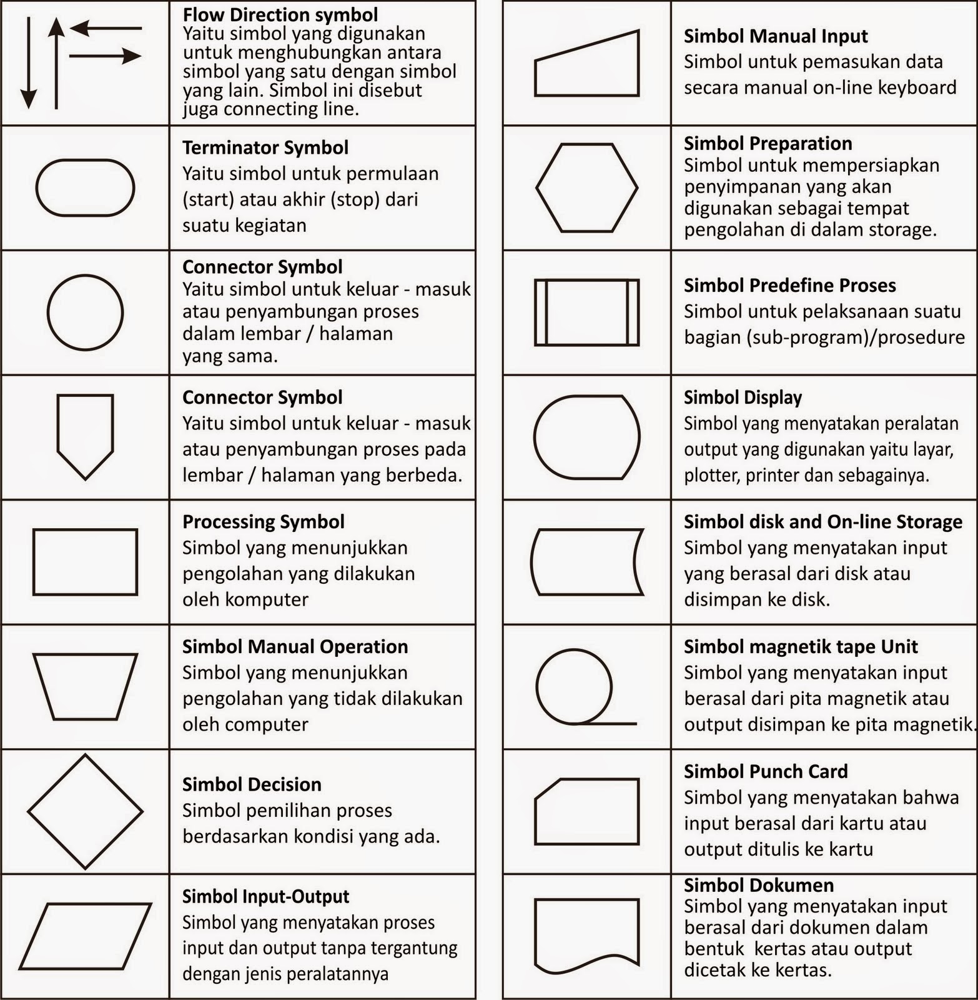
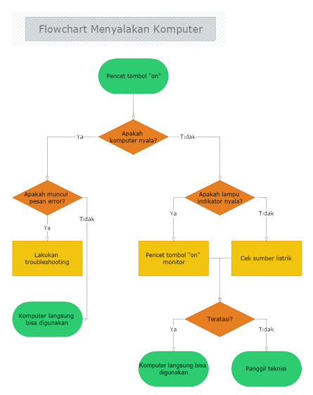

Jadi apa sih itu Flowchart?
Apakah kamu tahu istilah flowchart? Kata flowchart pasti sudah sering kamu dengar. Flowchart adalah sebuah diagram yang menjelaskan alur proses dari sebuah program. Dalam membangun program, flowchart berperan penting untuk menerjemahkan proses berjalannya sebuah program agar lebih mudah untuk dipahami. Nah, apa fungsinya, simbol yang sering digunakan, dan bagaimana contohnya?
Pengertian Flowchart
Flowchart atau bagan alur adalah diagram yang menampilkan
langkah-langkah dan keputusan untuk melakukan sebuah proses dari
suatu program. Setiap langkah digambarkan dalam bentuk diagram dan
dihubungkan dengan garis atau arah panah.
Flowchart berperan penting dalam memutuskan sebuah langkah atau
fungsionalitas dari sebuah proyek pembuatan program yang melibatkan
banyak orang sekaligus. Selain itu dengan menggunakan bagan alur
proses dari sebuah program akan lebih jelas, ringkas, dan mengurangi
kemungkinan untuk salah penafsiran. Penggunaan flowchart dalam dunia
pemrograman juga merupakan cara yang bagus untuk menghubungkan
antara kebutuhan teknis dan non-teknis.
Fungsi Flowchart
Fungsi utama dari flowchart adalah memberi gambaran jalannya sebuah program dari satu proses ke proses lainnya. Sehingga, alur program menjadi mudah dipahami oleh semua orang. Selain itu, fungsi lain dari flowchart adalah untuk menyederhanakan rangkaian prosedur agar memudahkan pemahaman terhadap informasi tersebut.
Jenis Flowchart
Flowchart sendiri terdiri dari lima jenis, masing-masing jenis memiliki sifat yang berbeda didalam penggunaanya. Berikut adalah jenis-jenisnya:
Flowchart dokumen
Flowchart program
Flowchart proses
Flowchart sistem
Flowchart skematik
Pertama ada flowchart dokumen (document flowchart) atau bisa juga disebut dengan paperwork flowchart. Flowchart dokumen berfungsi untuk menelusuri alur form dari satu bagian ke bagian yang lain, termasuk bagaimana laporan diproses, dicatat, dan disimpan.
Selanjutnya kita akan membahas flowchart program. Flowchart ini menggambarkan secara rinci prosedur dari proses program. Flowchart program terdiri dari dua macam, antara lain: flowchart logika program (program logic flowchart) dan flowchart program komputer terinci (detailed computer program flowchart).
Flowchart proses adalah cara penggambaran rekayasa industrial dengan cara merinci dan menganalisis langkah-langkah selanjutnya dalam suatu prosedur atau sistem.
Yang keempat ada flowchart sistem. Flowchart sistem adalah flowchart yang menampilkan tahapan atau proses kerja yang sedang berlangsung di dalam sistem secara menyeluruh. Selain itu flowchart sistem juga menguraikan urutan dari setiap prosedur yang ada di dalam sistem.
Terakhir ada flowchart skematik. Flowchart ini menampilkan alur prosedur suatu sistem, hampir sama dengan flowchart sistem. Namun, ada perbedaan dalam penggunaan simbol-simbol dalam menggambarkan alur. Selain simbol-simbol, flowchart skematik juga menggunakan gambar-gambar komputer serta peralatan lainnya untuk mempermudah dalam pembacaan flowchart untuk orang awam.
Simbol-simbol Flowchart
Berikut adalah simbol-simbol yang sering digunakan dalam proses pembuatan flowchart.
Contoh penerapan Flowchart dalam kehidupan sehari-hari
- Pencet tombol 'on" di CPU
- Apakah komputer sudah menyala normal?
- Jika ya
- Jika tidak
3.1. Apakah muncul pesan error di layar?
3.1.1. Jika ya, lakukan troubleshooting
3.1.2. Jika tidak, komputer bisa langsung digunakan
4.1. Apakah lampu indikator menyala
4.1.1. Jika ya, pencet tombol “on” pada monitor
4.1.2. Jika tidak, cek sumber listrik untuk memastikan arus
4.2. Apakah masalah teratasi?
4.2.1. Jika ya, komputer bisa langsung digunakan
4.2.2. Jika tidak, silakan panggil teknisi untuk memperbaikinya
